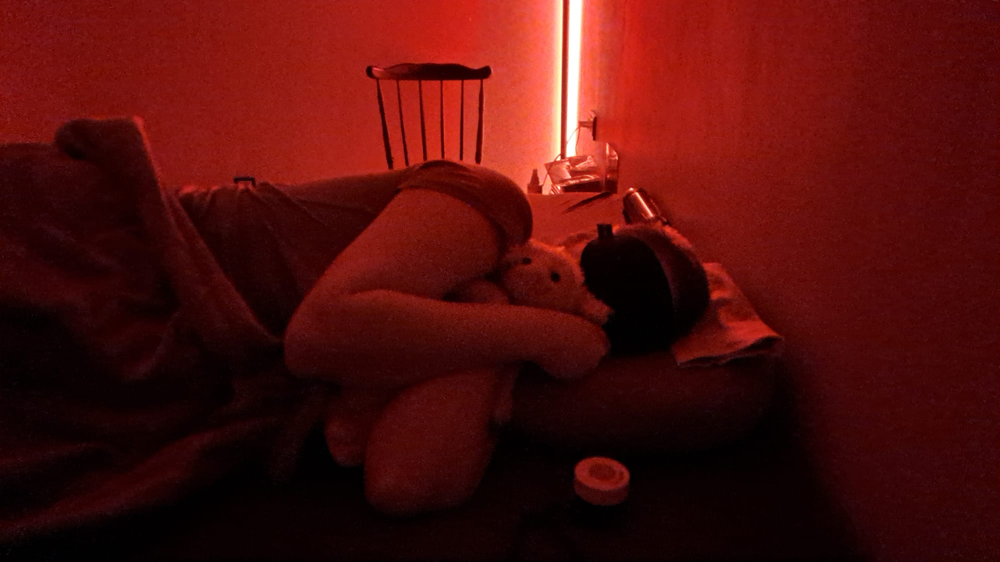
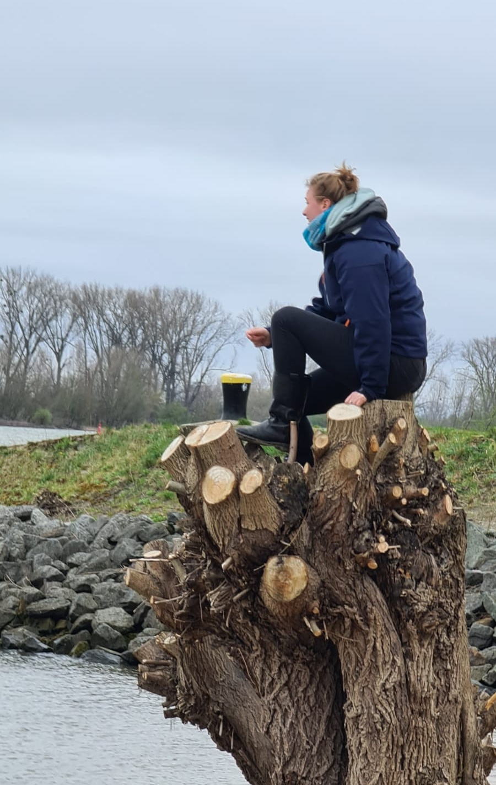
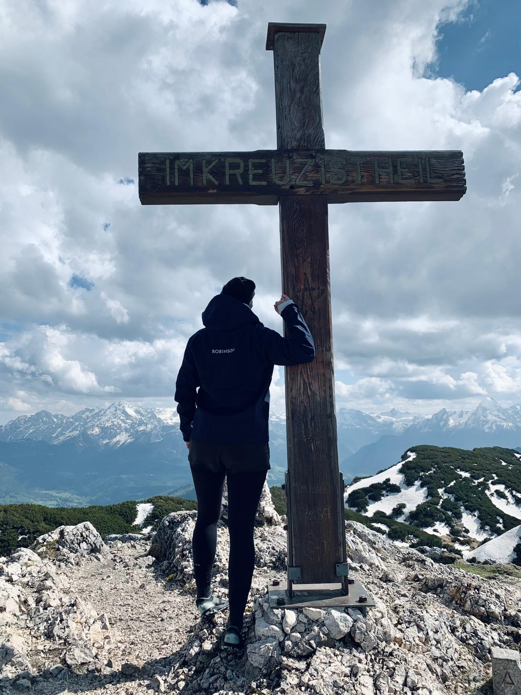
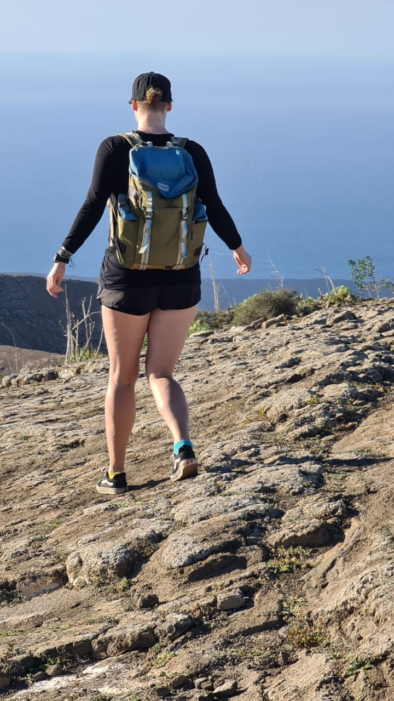
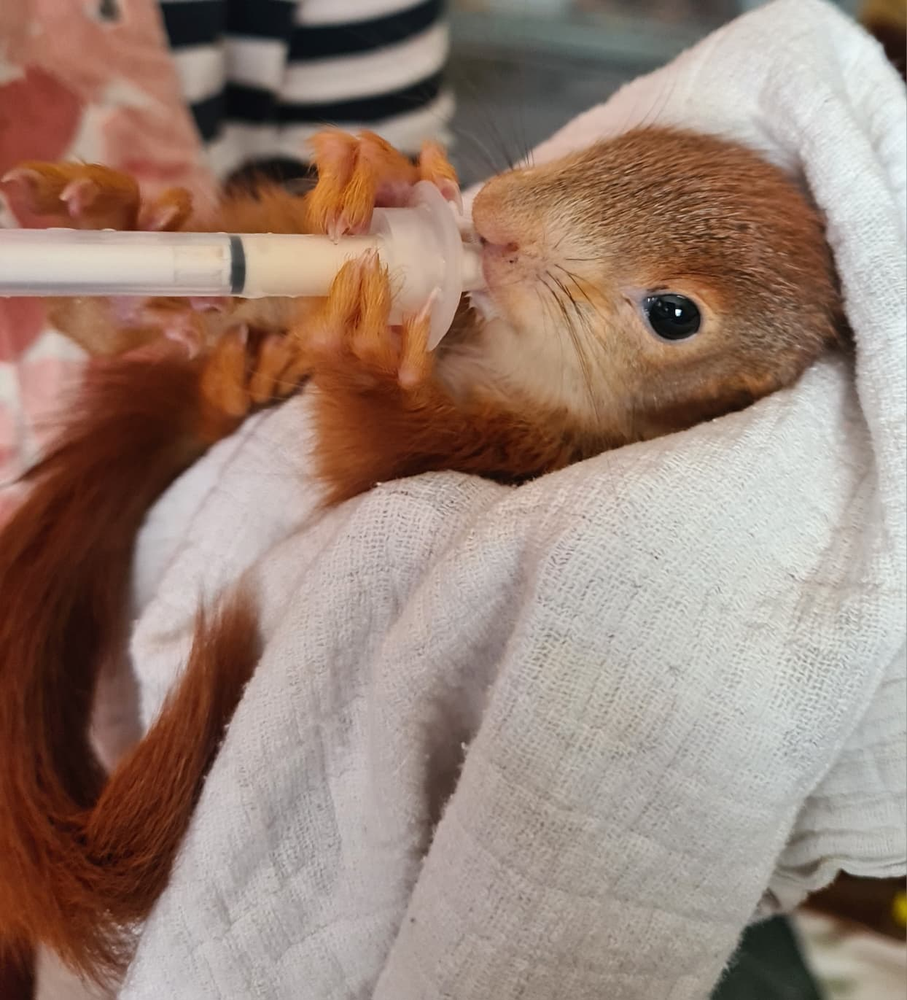
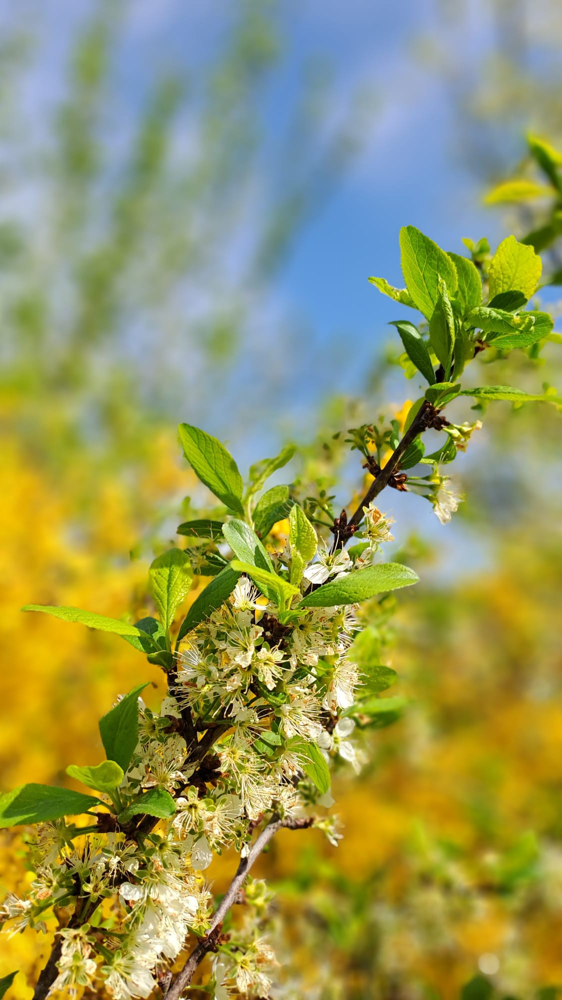

Hallo liebe Mitmenschen,
Mein Name ist Antje Weltmeyer, ich bin Mutter von Marie und wir brauchen dringend Eure/Ihre Unterstützung.
Marie ist 30 Jahre alt und hat seit über 4 Jahren ME/CFS (das ist die schwerste Form von Long Covid). Bis Dezember 2025 konnte Marie mit starken Einschränkungen am Leben teilnehmen. Arbeiten kann sie seit über 2 Jahren jedoch nicht mehr (wir mussten im Januar 2025 Erwerbsminderungsrente beantragen).
Die Myalgische Enzephalomyelitis/das Chronische Fatigue-Syndrom (ME/CFS) ist eine schwere, weitgehend unerforschte neuroimmunologische Erkrankung, die oft zu einem hohen Grad körperlicher Behinderung führt. Charakteristisch für ME/CFS ist die Post-Exertional Malaise – eine ausgeprägte und anhaltende Verstärkung aller Symptome nach geringer körperlicher oder geistiger Anstrengung. Beispielsweise das Putzen der Zähne, Waschen der Haare führt zu einer enormen Erschöpfung und Symptomverschlimmerung, die über viele Stunden anhält. Daher hat sich Marie Anfang des Jahres die Haare abrasiert.
Bereits seit 1969 klassifizierte die WHO ME/CFS als neurologische Erkrankung – die Covid-19 Pandemie führte zu einem signifikanten Anstieg der ME/CFS Fälle, dennoch ist die Erkrankung weitgehend unbekannt, auch bei medizinischem Fachpersonal, und es wird bisher wenig Forschung betrieben.
Marie war eine lebenslustige, kreative junge Frau, die gerne lacht und das Leben genießen konnte. Sie liebt ihren Freund, Tiere, die Natur, das Reisen, die Berge, das Wandern, ihr Motorrad, Möbelbau und hat jede Menge kreative und witzige Einfälle.

Sie war im Beruf erfolgreich, hat lange Zeit im Ausland gearbeitet und gelebt – dies ist nun alles vorbei. Vor zwei Jahren, als es ihr schon nicht gut ging, wünschte sie sich als größtes Ziel: eine Alpenüberquerung zu Fuß – davon sind wir nun Lichtjahre entfernt…


Innerhalb weniger Wochen ist sie nun zum Schwerstpflegefall geworden: Erst bekam sie Anfang Januar Influenza A, war 5 Wochen ans Bett gefesselt. Mitte Februar hatte sie extreme Rückenschmerzen, das MRT zeigte einen Bandscheibenvorfall (sie konnte nur noch auf allen Vieren aus dem MRT kriechen). Dieser wurde zunächst konservativ behandelt, am 13. März 2026 musste sie notfallmäßig an der Bandscheibe operiert werden… 8 Tage später erfolgte die 2. Operation, wieder drückte etwas auf den Nerv.
ME/CFS-betroffene Menschen haben eine starke Belastungsintoleranz. Durch die beiden Operationen, die Krankenhausaufenthalte, die starken Schmerzen, Narkose etc. fiel Marie am 18. März in einen sogenannten Crash – einen Shutdown des Körpers. Seitdem ist sie 24/7 pflegebedürftig. Ihr Lebensgefährte und wir Eltern kümmern uns um sie, unsere jüngere Tochter (Krankenschwester) steht mit Rat und Tat rund um die Uhr zur Verfügung.
Die Situation wurde und wird weiterhin von Tag zu Tag schlimmer. Marie hat starke Schmerzen. Nach 3 Notarzteinsätzen (3 Nächte in Folge), wo sie mit starken Opiaten behandelt wurde, gab es noch einmal einen verzweifelten Versuch, sie stationär in eine Schmerztherapie einzubinden – dies scheiterte. Nach 12 Stunden Notaufnahme wurden wir wieder mit dem Rettungswagen nach Hause geschickt (Marie vollgepumpt mit Ketamin und Fentanyl, um den Transport überhaupt zu überstehen). Eine stationäre Aufnahme sei nicht sinnvoll. Richtig – denn durch die erneute starke Belastung (Geräusche, Licht, Aufregung, Schmerzen, fremde Umgebung, Transporte) verschlimmerte sich der Crash.
Inzwischen müssen sogar Notärzte jegliche Einsätze ablehnen - sie sagen, entweder werde sie erneut in ein naheliegendes Krankenhaus gebracht, welche häufig überfordert sind mit der Situation oder es kann keiner vorbei kommen.
Der Bescheid der Deutschen Rentenversicherung für die Erwerbsminderungsrente liegt immer noch nicht vor. Ab 5. Mai 2026 wird Marie zu allem Überfluss völlig mittellos sein, da das Arbeitslosengeld ausläuft. Die DRV kann den EM-Rentenbescheid nicht verschicken, weil die Krankenkasse es, trotz wiederholter Aufforderung (sicherlich 50–70 Versuche, Telefonate, Emails, schriftlich), bisher nicht geschafft hat, ihre Zustimmung zum Rentenbeginn zu geben.
Wir haben versucht, Schmerztherapeuten zu finden, Maximalversorger-Kliniken gebeten zu helfen, jegliche Hilfe medizinischer Art zu bekommen – alles ergebnislos.
Versuche, einen Pflegedienst zu bekommen, scheitern derzeit ebenfalls – niemand fühlt sich der Sache gewachsen. Palliativteams haben, trotz Verordnung des Hausarztes, die Unterstützung abgelehnt, weil ihr Fokus auf sterbenden Menschen liegt – das ist verständlich. Alle Menschen, mit denen ich telefoniere oder per Email einen Austausch pflege, sind betroffen, zeigen Verständnis, aber das war es dann auch schon.
Dieser Anblick bricht uns das Herz, wenn sie im Bett liegt, ihr Kuscheltier aus Kindertagen im Arm – als einzigen Trost. Wir haben Marie eine Eichhörnchen-Patenschaft geschenkt… das hat ihr wenigstens einmal ein strahlendes Lächeln ins Gesicht gezaubert – sie schaut immer wieder die Fotos an. 🐿️

Wir sind die einzigen Menschen, die sich derzeit um Marie kümmern können, und wir wissen nicht, wie lange wir es noch schaffen. Die Belastung ist extrem und unsere Verzweiflung groß.
Der letzte Tiefschlag kam gestern: Das Gutachten vom Medizinischen Dienst schlägt Pflegestufe 3 vor – d.h. Marie könne das Meiste noch selbstständig erledigen. Mir kamen die Tränen beim Durchlesen. Auch hier müssen wir Widerspruch einlegen, das wird wieder Wochen dauern.
Wir mussten uns inzwischen mehrfach anhören, dass unsere Tochter „durch das Raster fällt" – das darf nicht passieren, wir haben 2026! Unsere Tochter Marie möchte doch nur leben!
Es fällt mir überhaupt nicht leicht, an die Öffentlichkeit zu gehen und um finanzielle Unterstützung zu bitten, aber dies scheint mir angesichts unserer Realität, der fehlenden Unterstützung unseres Gesundheits- und Sozialsystems und langwieriger Verwaltungsprozesse, die einzige Möglichkeit zu sein, die dringend benötigten Hilfsmittel und speziellen Therapien für Marie zu ermöglichen.

Marie liegt uns allen im Herzen.
Jede Spende ist wie ein Stück Hoffnung.
Marie benötigt ein extrabreites Pflegebett, evtl. irgendwann einen E-Rollstuhl (Marie ist sehr groß, also kann es kein Standardmodell sein). Viele Hilfsmittel haben wir schon gekauft, um die Pflege zu erleichtern. Spezielle Therapien, wie z.B. Akupunktur, evtl. irgendwann Immunadsorption (Blutwäsche) könnten sie dabei unterstützen, zurück ins Leben zu finden. Das Alles zahlt die Krankenkasse nicht. Selbst Medikamente, die oftmals niedrig dosiert „ausprobiert" werden, sind alle „Off-Label" (außerhalb der zugelassenen Verwendung) – das heißt, sie müssen privat bezahlt werden.
Bitte helft/helfen Sie uns, damit wir für Marie die Behandlungen bezahlen können. Jeder Euro zählt. Wir möchten unserem Kind ermöglichen, zurück ins Leben zu kommen.
Wir fühlen uns so hilflos und Marie möchte doch einfach nur leben…
Von Maries aktuellem Zustand und ihrem Aussehen möchten wir möglichst wenig veröffentlichen, um ihre letzte Würde zu wahren – der Anblick ist so traurig.